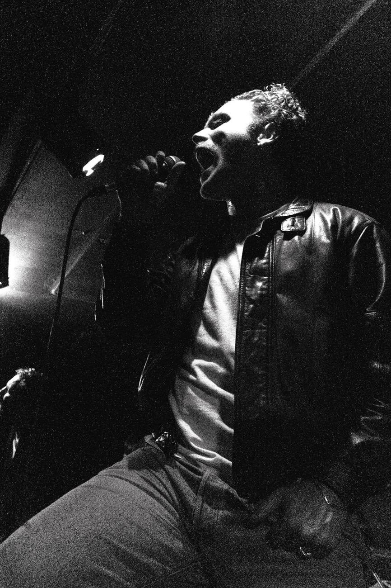
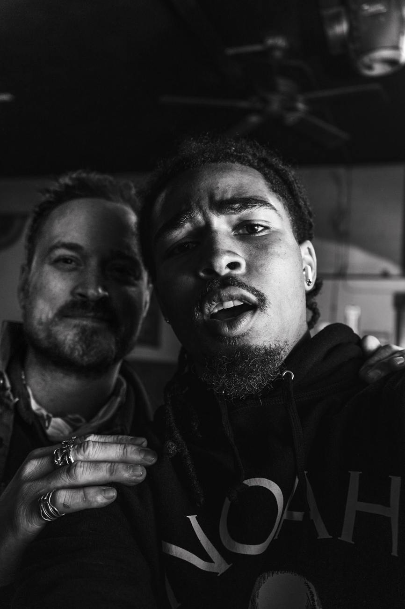

INDEPENDENT VISUAL ARCHIVE 001—009
An evolving digital exhibition of photography, moving image, and visual observation.
EXPLORE THE ARCHIVE ↓
MOVING IMAGE / 01
MOTION.
Moving images, changing perspectives, and moments that refuse to stand still.
THE MAIN FEATURE
Short looping preview / Full-length film opens in an immersive floating player.
SHOWPONY — MORPHINE
Music video filmed in 2025. Watch on YouTube ↗
BABY
OSAMAA.
New York Fashion Week at Café Erzulie. An original performance video filmed and shared on TikTok.
WATCH ORIGINAL ON TIKTOK ↗THE MOVING ARCHIVE
SHORT STUDIES / ORIGINAL UPLOADSTHE PERSON BEHIND THE FRAME
ABOUT
ME.

I work at the intersection of image-making, movement, and technology.
I'm a photographer, videographer, and FAA Part 107-certified drone operator with a passion for exploring the relationship between technology, visual storytelling, and human expression. My work moves between creative photography, cinematic filmmaking, and technical aerial imaging, allowing me to approach the world from perspectives that are both artistic and analytical.
I believe the evolution of modern imagery is about more than sharper cameras, higher resolutions, or increasingly advanced technology. It's about discovering new ways to communicate emotion, movement, and atmosphere. Whether I'm documenting the intensity of a live performance, constructing a cinematic sequence, capturing the energy of a moving subject, or observing the quiet details of everyday life, I'm drawn to moments that tell stories without needing words.
My professional experience in drone operations and infrastructure inspection has strengthened my understanding of precision, composition, and visual observation. Alongside my creative work, this technical background continues to influence how I approach image-making.
Through WhoPausedTheMovie, I aim to explore the space between motion and stillness, reality and interpretation, and traditional photography and emerging visual technologies. My goal is to create imagery that feels intentional, immersive, and unmistakably human—even as the tools we use to capture it continue to evolve.